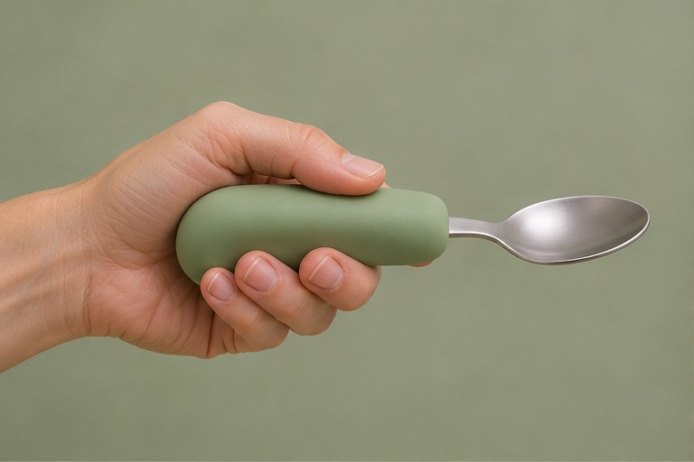
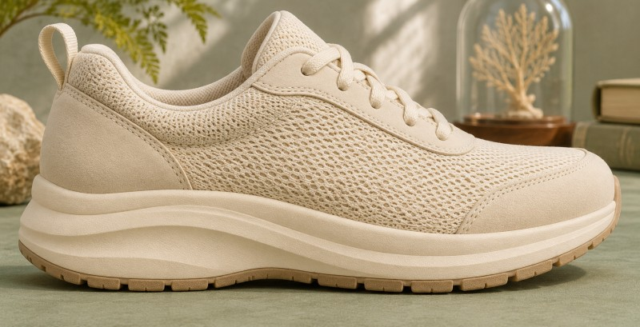
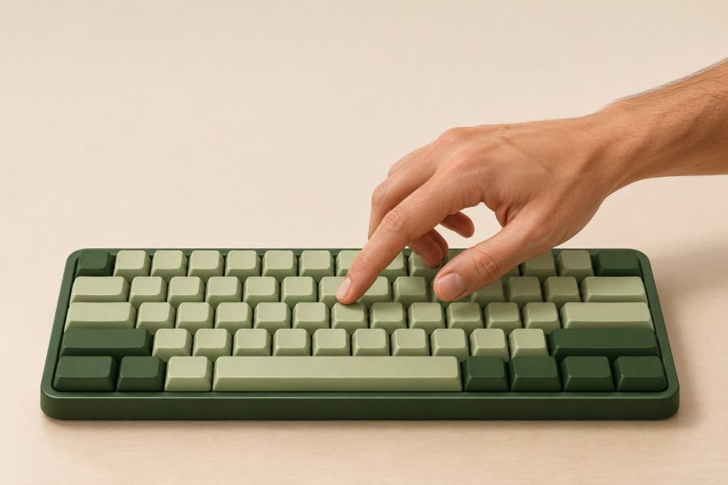
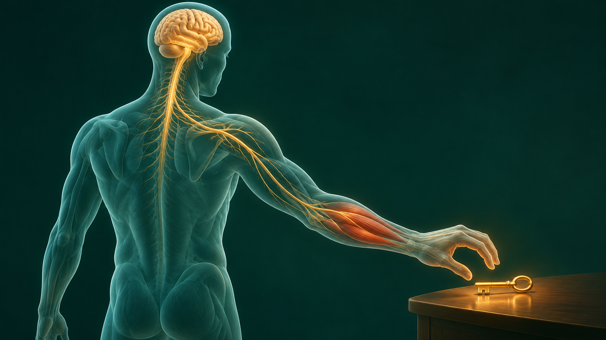
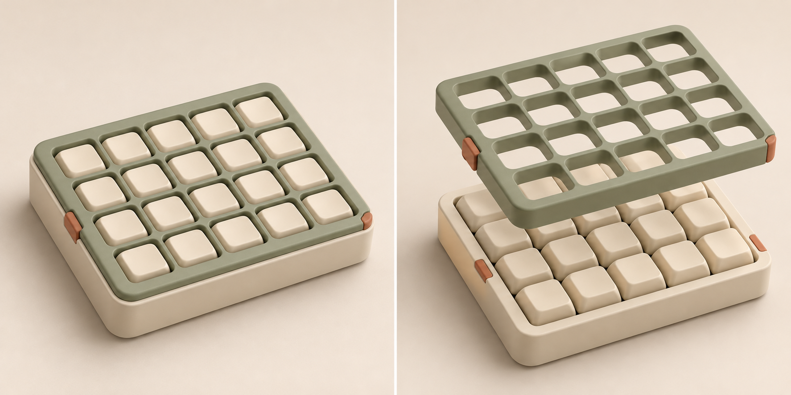
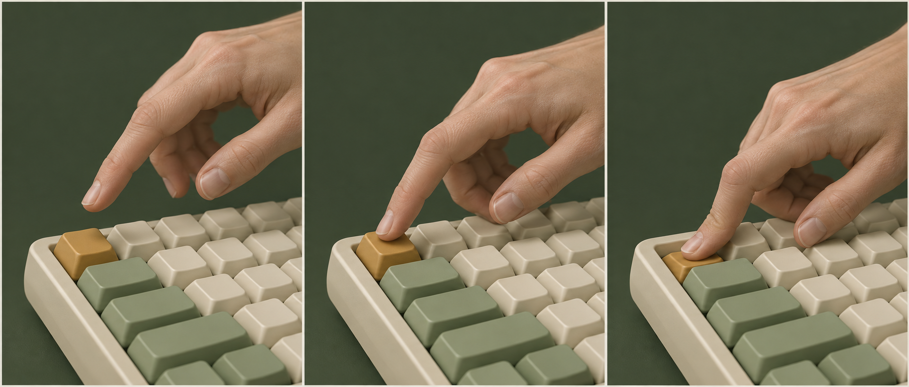

Everyday tools
Handle size, shape and contact surfaces can change how a person holds a utensil.
Explore using a spoonHuman movement · Accessible design
Erry Mobility is an independent, student-led initiative exploring how biomedical engineering and accessible design can accommodate different movement abilities and make everyday activities more accessible.
Inspired by lived experience with cerebral palsy, Erry Mobility begins with a simple question: how can everyday design better accommodate individual movement abilities?

Everyday activities involve different movement demands. The shape of a utensil, the cushioning of a shoe and the position of a keyboard can influence how a person interacts with it.
Conventional products may overlook some functional needs. Finding suitable tools can take extra time and effort. What works can vary from person to person and from task to task.




I was diagnosed with mild cerebral palsy at the age of three and grew up relying mainly on the left side of my body for everyday activities such as feeding myself and writing.
Finding products that suited my movement abilities took time. I paid attention to how soft a shoe sole felt, how much cushioning it offered and how easily I could hold a utensil.
While studying for my GED at BEAM Education Foundation, I began learning about anatomy and physiology. Studying muscles, nervous system coordination and animal locomotion made me curious about how forces and movement could inform the design of everyday devices.
Erry Mobility grew from that curiosity. It’s my first step towards exploring accessible design through biomedical engineering.
Read the founder storyMovement depends on the coordinated activity of the nervous system, muscles, joints and sensory feedback. Understanding these relationships helps us ask how a tool or environment changes a task.
Touch, vision and information about body position help guide adjustments throughout the movement.
Explore movement science in Understand CP
Biomedical engineering brings together knowledge of the body, mathematics, technology and design. Erry Mobility explores how changes to tools, surroundings and input methods can change the demands of a task.
Handle size, shape and contact surfaces can change how a person holds a utensil.
Explore using a spoon
Target size, key spacing and input method can change how a person selects a key.
Explore the conceptual keyguard
Tool position, support and surroundings can change the demands of a task.
Explore balance and supportUnderstand the everyday experiences that motivate a design question.
Identify the task, movement demands and design constraints.
Choose a possible adaptation grounded in scientific principles.
Represent the idea with a model, drawing or interactive demonstration.
Measure defined outcomes under comparable conditions.
Use observations and evidence to guide the next design decision.
Typing is Erry Mobility’s first practical engineering case study. The Typing Lab explores how keyboard positioning and accessible input methods can support one-handed use.
In a keyboard-position comparison, moving the same keyboard lets us isolate one change while keeping the message and input method consistent.
The lab records task completion time, final text errors and optional comfort observations.
Explore the Typing Lab
We envision an inclusive society in which individuals with diverse motor abilities have equitable opportunities to participate in everyday life with dignity, confidence and independence.
Our mission is to advance understanding of human movement and assistive technology through accessible biomedical education, interactive engineering demonstrations and the exploration of affordable, person-centred adaptations.
To explore how biomedical engineering can address everyday barriers to participation by developing, evaluating and communicating practical assistive design concepts that respond to diverse functional needs.

Connect anatomy, motor control and everyday movement.
See how tools and environments can be adapted for everyday tasks.

Compare a design change and see how it is evaluated.
A personal journal allows visitors to record their practice, perceived difficulty and observations, supporting reflection at their own pace.
Erry Mobility is an early step towards exploring affordable, adaptable assistive devices, especially for communities with limited access to specialist equipment.
Future work could include physical prototypes, movement measurement and accessible interfaces. Combining sensors with software could help investigate specific questions and evaluate designs systematically.
Erry Mobility is an independent educational and exploratory engineering initiative. Its illustrations, models and interactive demonstrations support learning and investigation but do not constitute clinical assessment or establish therapeutic effectiveness.